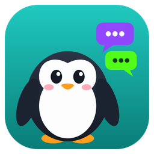

Twitch + Kick chat'i tek ekranda — modların yeni en iyi arkadaşı
iPhone sürümü hazırlanıyor. Kurduktan sonra güncellemeler uygulamanın içinden gelir.
Twitch ve Kick'in resmi chat'leri tek pencerede. Linki yapıştır, ikisi birden açılsın.
Kullanıcı adına tıkla, timeout ya da ban'ı Twitch ve Kick'e aynı anda gönder. Twitch'e saniye, Kick'e dakika otomatik.
Tıkladığın kişinin daha önce kaç timeout / ban yediğini anında gör.
Yanlış kişiye mi gitti? Mod log'dan tek tıkla kaldır.
Yayının gecikmesini ve iki platformdaki canlı izleyici sayısını gösterir.
Mod araçları sadece mod hesaplarında çıkar; normal izleyici sade bir chat görür.
Uygulamanın içinden sorun gönder, durumunu takip et: Gönderildi → Sırada → Çözüldü.
Windows'ta otomatik; Android'de tek dokunuş.
Hayır, tamamen ücretsiz.
Hayır. Girişi Twitch ve Kick'in kendi sayfalarında yaparsın; uygulama şifreni hiç görmez ve kaydetmez.
Evet — iki chat'i aynı anda takip etmek için. Mod araçları sadece mod hesaplarında görünür.
Henüz yok, hazırlanıyor.
Uygulamadaki 🐞 düğmesinden bildir; durumunu "Bildirdiklerim"den takip edebilirsin.